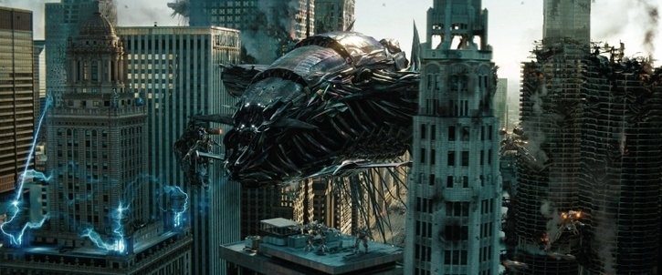
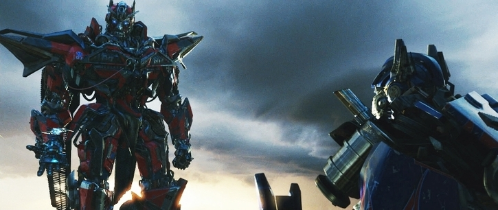
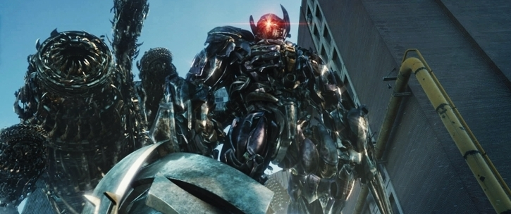

Date Released
: June 29th, 2011
MPAA Rating
: PG-13
Starring
: Shia LaBeouf, Rosie Huntington-Whiteley,
Tyrese Gibson, Josh Duhamel, John Turturro, Frances McDormand, Patrick
Dempsey, John Malkovich, Alan Tudyk, Ken Jeong, Peter Cullen (voicing Optimus
Prime), Hugo Weaving (voicing Megatron), Leonard Nimoy (voicing Sentinel
Prime)

I have a strict policy
of never re-doing any of my reviews, but if I had to re-do any of them,
it would be my review of the
Revenge of the
Fallen
movie
. On reflection, and upon repeated viewings of that
movie, although I still think it's excellent overall, I'd have knocked
the score about ten points below what I gave it. When I wrote the review
of that movie, I still had the excitement of many of those scenes in mind
without watching them over and over like I have for this review on
Dark
of the Moon
(I've watched it three times as of this review, once without
3-D). Upon watching it over and over again, I saw many odd cuts and whatnot
that I didn't notice before, and some of the raunchy humor started to bug
me a bit more. Does that make my initial score or my revised score now
the "true score"? You be the judge.
However, I feel very
confident that, without the "post-movie excitement" running through my
veins, that
Dark of the Moon
is definitely the best of the Transformers
movie trilogy. The cuts are more consistent, the plot flows a bit more
smoothly and evenly throughout the movie, and the inappropriate humor,
though still there a little, only surfaces its head for brief periods near
the beginning of the movie and only once long enough to bother me (discussed
later). The incredible action, musical score, and CGI that the Transformers
movies are best known for are back and better than ever.
Although I won't go
into too much detail about the plot of this one (though I will say some
major spoilers here and there), suffice it to say Megatron and the 'Cons
are again up to no good. Long story short, they have a plan to transport
Cybertron near Earth and use us to rebuild their planet. This all hinges
on this movie's revelation that Sentinel Prime (voiced by Leonard Nimoy)
has been aboard the Ark, a Cybertronian spaceship that unbeknownst to the
Autobots crashed on the Moon in the '60s, sparking the beginning of the
space race between us and the then-Soviet Empire. Optimus uses his Matrix
to revive Sentinel, who surprised everyone by betraying the Autobot cause
and helping Megatron (who he had struck a deal with before leaving Cybertron)
to teleport their planet to Earth. Obviously this is a very bare-bones
summary, but it's written quite well, with the parts that intersect with
our history being particularly well-done. There are some small holes and
noticeable oddities (such as piling ongoing plan after ongoing plan on
Megatron over the course of these three movies, and the lack of any gravitational
effects on Earth when Cybertron starts to emerge from the Space Bridge
near the end of the movie), but these are hardly big enough to ruin one's
enjoyment of the movie or take you out of the moment. I uphold it's a pretty
solid plot, despite what many professional critics say (I maintain a lot
of criticism of this trilogy's plot-- which critics often never go into
detail about why it's so bad-- is simply the inability for many of them
to look past it being a "toy movie"). In addition, just like the previous
two movies, there's a LOT going on in the action scenes-- so much so that's
easy to miss some of the minor plot details through just one viewing.
Optimus Prime's characterization
is excellent. Peter Cullen comes through again, and every one of Prime's
lines is treated with the gravity it deserves. A bit of hoopla has been
made over Optimus' "ruthlessness" in this movie, but Transformers have
to be more "thoroughly" killed than humans if you want them to stay dead--
plus, it all seems more than justified given Sentinel Prime and the Decepticons'
actions in this movie, basically destroying an entire city. A more grown-up
plot (with plenty of shown human deaths and larger implications-- this
is by far the darkest of the three movies) demands a more grown-up response.

Leonard Nimoy as Sentinel
Prime is the standout new character of the new movie. He gets quite a bit
of characterization, and really does straddle that line of making you ALMOST
understanding his point of view. Nimoy does an excellent job making Sentinel
sound wise and overbearing at the same time. Sadly, characterization is
probably this movie's weakest point, as due to keeping most of the characters
from the previous movies and adding a bunch more for new toys, the cast
gets a bit crowded. Megatron is adequately characterized, his head injury
from the end of RotF obviously causing him to be far from his prime in
this movie-- he's clearly a has-been, which is an interesting new twist
on the character, though he has less screen time in this movie than in
either of the prior two. Laserbeak is the surprise standout new Decepticon,
being a really creepy ruthless killer who surprisingly speaks English.
Bumblebee is Bumblebee, you know him. However, pretty much every other
Transformers character gets only a few lines. Their characterization is
sadly reduced to having one of various accents to help them stand out a
bit more. This is especially disappointing for the new big bad Shockwave,
who only has one line in English (saying Optimus' name) and doesn't really
do anything cool before he's killed, though his massive driller-pet is
pretty impressive. I understand why this is necessary-- after all, their
models are obviously very expensive and Hasbro does need to sell toys--
but I wish a bit more time could have been spent on a couple more of the
characters. In addition, Ironhide-- my favorite movie Autobot-- is killed
by Sentinel Prime before the movie's halfway point, and I really liked
his characterization up to this point. Of course, that's the entire point--
that they kill a character that you care about-- but there aren't really
any characters that take his place in the "excellent characterization"
department that are still alive at the end of the movie. ALL of the named
Movie Decepticons, as well as Sentinel Prime, Wheelie, and two new Autobots
named Brains and Que (supposed to be Wheeljack, but Paramount pulled their
weight on his name) are also all dead by the end of the movie. It certainly
makes it hard to see how Hasbro will continue the movie franchise from
here, and sets a very definitive end to the trilogy. However, I should
end this with saying that despite shallow characterization, many of the
'bots and 'cons are still enjoyable to watch and listen to and different
enough from each other-- they just aren't deep. The movie continues to
concentrate just a tad TOO much on the flapship characters of Prime and
Bumblebee to the detriment of the other Autobots.
Shia's character Sam
Witwicky continues to grow, definitely being the most well-developed character
since he's the human star of the movie. I really like how this time around
he's no longer denying his importance-- in fact, he insists on it when
the world tells him otherwise, and has little tolerance for BS this time
around. Some of his comebacks are quite well-worded. The new "token hot
girl" that replaces Megan Fox-- Rosie Huntington-Whiteley, who plays Sam's
girlfriend Carly-- is a bit more than just arm candy, having a real purpose
to the plot. She also seems to act a bit better than Fox (though she's
still rough around the edges), brings a more positive tone to the role,
and also has some pretty good lines. The military characters of Epps and
Lennox largely stay the same as they have, being military commanders, and
former Sector Seven Agent Seymour Simmons is now a millionaire, and is
pulled in via his obsession with TF history. Although still an interesting
and oftentimes funny character, I felt his presence and comedy in this
movie was a bit more forced than in the previous two. His assistance, Dutch
(played by Alan Tudyk) is a GREAT character-- I would argue the best human
one-- in the new movie. He starts out just being what you'd think would
be a typical "effeminite male" stereotype, but quickly shows another side
that's quite interesting and honestly has me wondering more about his past.
Frances McDormand plays the CIA director and is also a very nice new addition,
being a bit of a "bull-headed bureaucrat" like the previous movie's Director
Galloway, but not being so one-dimensional and showing a softer side as
the movie progresses. Patrick Dempsey plays a person who is at first Carly's
boss, but later is revealed to be working with the Decepticons and has
a pretty nice character twist because of that. Sam's parents also play
a brief role-- his mom still bringing a few inappropriate jokes to the
table-- but, it should be noted again, have
very
brief roles and
do have some great one-liners.
The two human characters
I have problems with are Ken Jeong's and John Malkovich's characters. Ken
Jeong plays a former NASA lunar mapper who was unwillingly working for
the Decepticons, but during his entire somewhat brief part in the movie,
he's really over-the-top with his humor and oddities. It just would've
been better if a much more "normal" person played his part. On the other
hand, John Malkovich, who plays Sam's new boss, is quite funny at times,
though occasionally he ventures into the "just weird and unsettling" humor
displayed all the time by Ken Jeong's character. However, he's completely
unnecessary to the plot, given that the existence of Patrick Dempsey's
character, and it shows as he's completely absent from the last two-thirds
of the movie. That time should've been dedicated to either some more TF
characters or, if that was too expensive an option, perhaps a bit more
character exploration for Dutch, methinks.
The action is classic
Transformers taken to the Nth level. The battles are massive, and given
how large a part of downtown Chicago Michael Bay was given to work with,
the whole third act feels much more solid with scenes fitting together
better than in RotF. The last battle in Chicago is simply HUGE, easily
the longest final act of the three movies, but it doesn't ever drag because
there's so much going on and there's a
reason
for everything going
on, no extended "shoot and duck" sequences here. The skyscraper sequence
is particularly well put-together-- I think the part where, to evade the
Decepticons, the humans in question jump out the side of the slanted upper
part of the skyscraper, slide down the glass for a bit, and then shoot
the glass in front of them to fall into another floor is simply ingenious.
There's also a quite a few "graphic" kill sequences of Transformers-- not
something for the kiddies, there. Some other great, though much more brief,
action scenes take place on the highway in Washington, D.C. and near the
beginning of the movie at Chernobyl. The music fits the action incredibly
well while keeping in tone with the previous movies, and the CGI never,
ever looks fake. It's amazing the entire time, and much more prevalent
than in the previous two movies. It's why for the second TF movie in a
row I've felt the action and CGI were so ground-breaking they deserve scores
ABOVE the maximum, as they actually more than cancel out some of the downsides.
It definitely should've happened with TF1 and TF2, but if this movie doesn't
win any and all awards for outstanding CGI this year it will be a
crime
.

In summary, Transformers: Dark of the Moon , while not quite perfect as it still has a few short raunchy humor bits and some lack of characterization for most of the new TFs, for the most part takes the better editing and pacing of the first movie while expanding the scope and action beyond even that of Revenge of the Fallen and leaves us with an amazing end to a great trilogy. Highly recommended for teenagers and older-- but some of the humor and the many human deaths and "Mortal Kombat"-style takedowns on robots definitely make this one not for the little kiddies-- the PG-13 rating is certainly deserved, moreso on this one than on either of the previous movies. Let the youngins watch the cartoons instead.
Plot
: 18/20
Characterization
: 6/10
Dialogue
: 15/15
Action
: 22/20
Humor
: 13/15
CGI
: 13/10
Musical Score
: 10/10
Overall Rating : 97/100 ...Wow.
(Pictures from Boxofficemojo.com .)